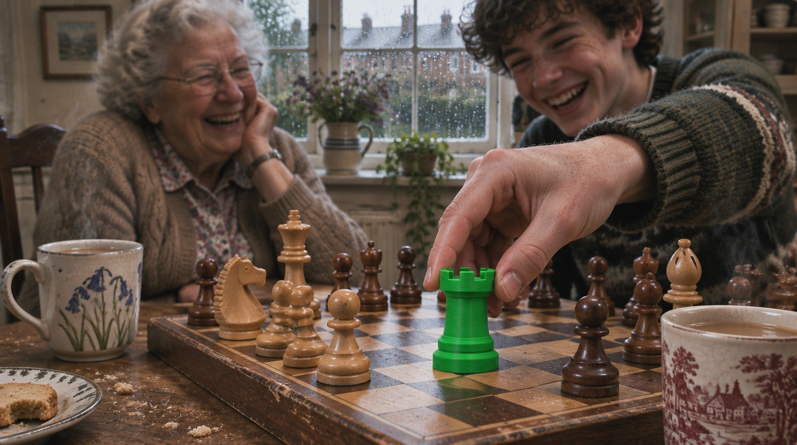
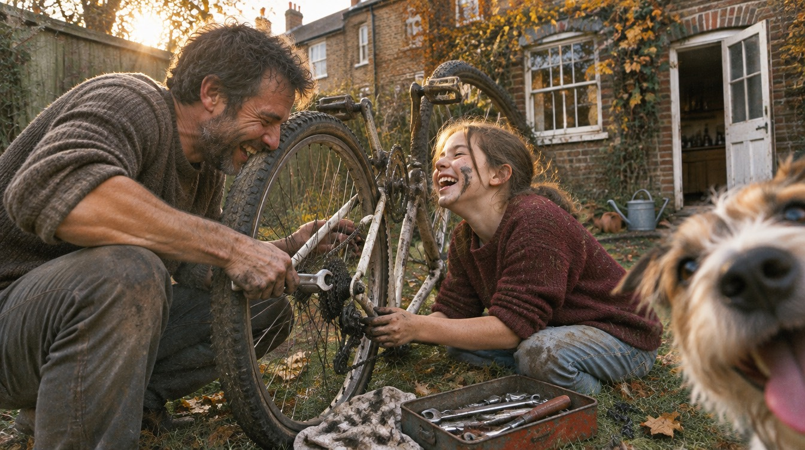
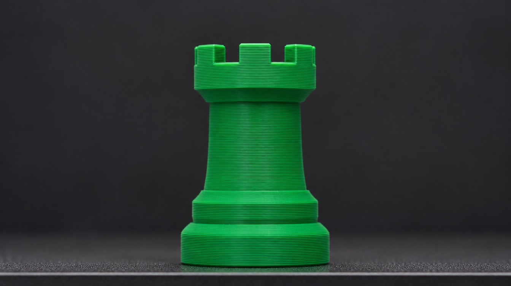

Nobody ever framed a screenshot.
The good stuff doesn't happen in your pocket. It's the game that goes on too long. The thing you fixed together. The story that gets worse every time it's told. It never makes the highlights. It is the highlights.
We make solid, useful things for that part of your life. They don't need charging, updating or your email address. They don't want your attention. They'd rather you had it back.
Best seen with both eyes.



Seventeen seconds. Then off you go.

Made when someone wants it.
We start with a proper grumble: something you own that's nearly right. We design the fix in Britain and show it to you first.
If enough of you want it, we'll print it, one thin layer at a time. If you don't, we won't. The world has enough tat.
On the bench.
- A shelf for story figuresFor the little characters that tell kids stories without a screen. We want nothing on it that can come loose.
- A table where there isn't oneFolds down for breakfast, maps and cards. Folds away when you're done.
Still being designed. Not for sale yet.